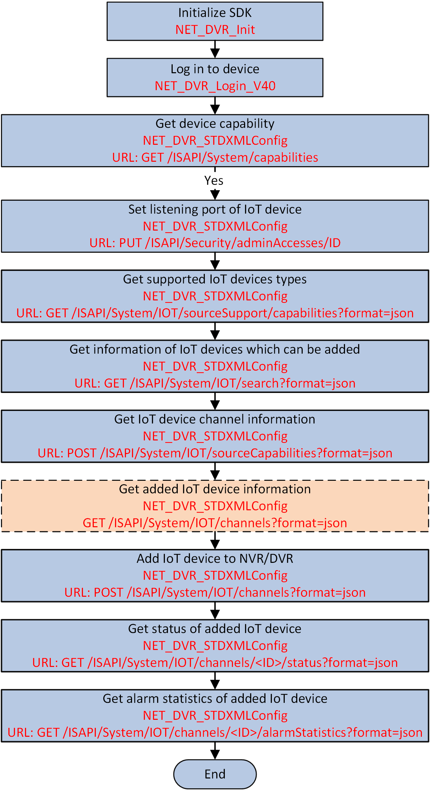

For convenient management of IoT device, such as status searching, event/alarm linkage, alarm receiving, and so on, you should add the IoT device to NVR/DVR first.
Make sure you have called NET_DVR_Init to initialize the integration resources.
Make sure you have called NET_DVR_Login_V40 to log in to the device.

Figure 1 Programming Flow of Adding IoT Device to NVR/DVRThe device capability is returned in the message of XML_DeviceCap.
The supported IoT devices types are returned in JSON_IOTSourceSupport.
The IoT devices which can be added is returned in JSON_IOTSourceList.
The supported source capability is returned in JSON_SourceCapabilities.
Call NET_DVR_STDXMLConfig to pass through the URL: GET /ISAPI/System/IOT/channels?format=json for getting the information of added IoT devices.
Call NET_DVR_STDXMLConfig to pass through the URL: GET /ISAPI/System/IOT/channels?format=json&deviceInductiveType= for getting the information of added IoT devices according to inductive type.
Before setting the specified IoT device, you can get the IoT device by the URL: GET /ISAPI/System/IOT/channels/<ID>?format=json.
Call NET_DVR_STDXMLConfig to pass through the URL: DELETE /ISAPI/System/IOT/channels/<ID>?format=json for deleting the specified IoT channel.
Call NET_DVR_STDXMLConfig to pass through the URL: DELETE /ISAPI/System/IOT/channels/<ID>/all?format=json for deleting all channels (video channel and IoT channel) of added IoT device.
Call NET_DVR_STDXMLConfig to pass through the URL: GET /ISAPI/System/IOT/channels/status?format=json for getting the status of added IoT device.
Call NET_DVR_STDXMLConfig to pass through the URL: GET /ISAPI/System/IOT/channels/status?format=json&deviceInductiveType= for getting the status of added IoT device according to inductive type.
Call NET_DVR_STDXMLConfig to pass through the URL: GET /ISAPI/System/IOT/channels/<ID>/status?format=json for getting the status of specified channel of added IoT device.
| Option | Description |
|---|---|
|
Import |
Call NET_DVR_STDXMLConfig to pass through the URL: PUT /ISAPI/System/IOT/channelConfig?format=json for importing the list of added IoT devices. |
|
Export |
Call NET_DVR_STDXMLConfig to pass through the URL: GET /ISAPI/System/IOT/channelConfig?format=json for exporting the list of added IoT devices. |
Call NET_DVR_Logout and NET_DVR_Cleanup to log out and release the resources.